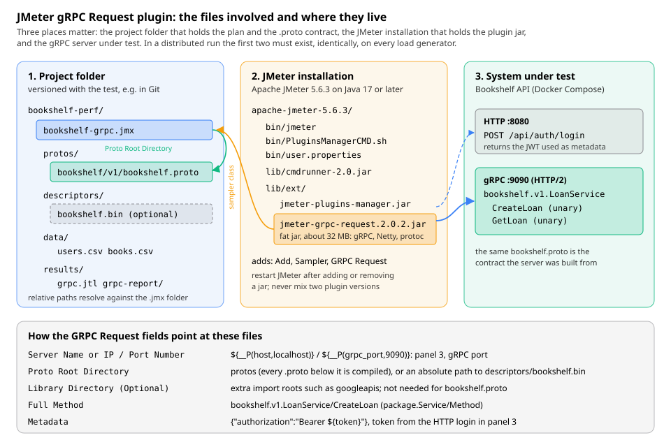

gRPC Load Testing
|
This content was generated with the assistance of AI and should be verified against the official documentation before being relied on in production. |
This page was written against Apache JMeter 5.6.3 (latest release on 2026-10-14; it runs on Java 8 and later, Java 17
or later is recommended, and Java 21 is used here), with the differences planned for JMeter 6.0 noted where they
matter. JMeter 6.0 is not released: its planned changes come from xdocs/changes.xml on the master branch, need Java 17
or later (Java 21 recommended) and are described as planned, not as shipped behaviour. Core JMeter has no gRPC
sampler, so this page relies on a community plugin, the JMeter gRPC Request sampler (Plugins Manager id
jmeter-grpc-request), in version 2.0.2 from the bakthava/jmeter-grpc-request continuation, installed with the
JMeter Plugins Manager 2.0; the jmeter-maven-plugin 3.8.x appears in the Maven install route. The plugin bundles
grpc-java 1.38.0 and the protoc-jar library 3.21.4 (values from its pom.xml at tag v2.0.2).
The plugin’s README documents only part of its behaviour. Where this page describes something the README does not (the mTLS fields, the channel options, the response codes the sampler writes, when the protos are compiled), it says so and names the source file of release 2.0.2 that the behaviour was read from. Plugin status, versions and dates were checked on 2026-10-14 against the two GitHub repositories, their release pages and the catalogue served by jmeter-plugins.org.
gRPC services are increasingly the internal API between backend services, and they deserve the same load testing as a
REST API. This page explains the gRPC concepts a tester needs, why JMeter needs a plugin for them, how to install and
configure that plugin (every field), what it costs on the load generator, and how to build the companion
bookshelf-grpc.jmx plan against the Bookshelf bookshelf.v1.LoanService: a login over HTTP, CreateLoan with data
from CSV files, the new loan_id correlated into GetLoan, assertions on the gRPC status and payload, think time, a
closed and an arrival-rate profile, CLI and distributed runs. It ends with the limits of the plugin and the
alternatives.
The service side, how the gRPC service and its .proto contract are built in Spring Boot, is covered by
gRPC APIs with Spring Boot and
API-First Development: REST and gRPC. This page assumes
the HTTP and plan-building pages of this section, in particular
Correlation & Extractors,
Assertions and
Plugins & Plugins Manager.
gRPC basics for load testers
gRPC is a remote procedure call framework. A service is described in a .proto file written in the Protocol Buffers
language: messages (typed records with numbered fields) and services (named methods taking one message type and
returning another). Code generators turn the file into client stubs and server skeletons for many languages. On the
wire, the points that matter for load testing are:
-
HTTP/2 transport. Every call is an HTTP/2 request with
POSTto the path/<package>.<Service>/<Method>, for example/bookshelf.v1.LoanService/CreateLoan, and content typeapplication/grpc. HTTP/2 multiplexes many concurrent calls (streams) over one TCP connection, so a gRPC client normally keeps a long-lived connection (a channel) and does not open a connection per call. -
Protobuf payloads. Messages are binary-encoded Protocol Buffers, not text. A tester cannot type a request body by hand without a tool that knows the message schema; that is why every gRPC load tool needs either the
.protofiles, a compiled descriptor set or generated code. -
Four call types. Unary (one request, one response), server streaming (one request, a stream of responses), client streaming (a stream of requests, one response) and bidirectional streaming. The type is declared in the
.protowith thestreamkeyword. -
Deadlines. The client states how long it is willing to wait for the call. If the deadline passes, the call ends with the status
DEADLINE_EXCEEDEDon the client, and well-behaved servers stop working on it. In a load test the deadline acts as the timeout and defines what counts as "too slow". -
Metadata. Key/value pairs sent as HTTP/2 headers with the call (and returned as headers and trailers). It carries authentication (
authorization: Bearer ...), tracing ids and tenant ids. Keys are case-insensitive ASCII; keys ending in-bincarry binary values. -
Status codes. The result of a call is a gRPC status, sent in the
grpc-statustrailer, not the HTTP status (which is200even for most failed calls). The codes are:
| Code | Name | Typical meaning in a load test |
|---|---|---|
0 |
|
Success. |
1 |
|
The client cancelled the call. |
2 |
|
An unexpected server error, often an exception not mapped to a status. |
3 |
|
The request is invalid regardless of system state: usually a test-data problem. |
4 |
|
The deadline expired before the call completed: the service is too slow for the deadline you set. |
5 |
|
The requested entity does not exist, for example an unknown loan id after a failed correlation. |
6 |
|
A create conflicted with an existing entity: often non-unique test data. |
7 |
|
The caller is authenticated but not allowed. |
8 |
|
A quota or limit was hit (rate limiting, message too large, server out of resources). |
9 |
|
The system is not in the state required, for example the book is already on loan. |
10 |
|
A concurrency conflict, typically a transaction abort. |
11 |
|
A value past the valid range. |
12 |
|
The method is not implemented by this server: usually a wrong full method name or a stale |
13 |
|
An internal invariant was broken. |
14 |
|
The service is currently unavailable: connection refused or reset, server overloaded or shutting down. |
15 |
|
Unrecoverable data loss or corruption. |
16 |
|
Missing or invalid credentials: an absent or expired bearer token in the metadata. |
Source: Core concepts, architecture and lifecycle (gRPC), Status Codes (gRPC), Deadlines (gRPC) and Metadata (gRPC)
Two consequences shape every gRPC load test:
-
Connections are few and long-lived. A load test that opens a fresh connection per call measures connection setup (and the TLS handshake), not the service. Conversely, because one connection carries all calls of a client, a load balancer that balances connections (layer 4) sends all calls of one client to the same backend. The gRPC project describes this as the reason for proxy (layer 7) or client-side load balancing. If the test uses few connections against a scaled-out service behind a layer-4 balancer, some backends may receive no load at all.
-
Success is not the HTTP status. A tool that only checks "the HTTP exchange worked" reports
NOT_FOUNDorUNAUTHENTICATEDcalls as successes. The sampler must turn the gRPC status into a JMeter success flag and the test must assert on it.
What core JMeter offers: no gRPC
Apache JMeter 5.6.3 has no gRPC sampler, and none is planned in changes.xml for 6.0. The HTTP Request sampler cannot
stand in for one: its implementations (HttpClient4 and Java) speak HTTP/1.1, while gRPC requires HTTP/2 framing,
binary protobuf bodies and trailers carrying the status. The component reference lists no HTTP/2 or gRPC element.
The options are therefore:
| Option | How it builds the request | What you need | Status (2026-10-14) |
|---|---|---|---|
JMeter gRPC Request plugin ( |
Compiles the |
The plugin jar in |
Original repository archived on 2024-04-04 (last release 1.2.6, 2022-12-10). Continued as 2.0.0 to 2.0.2 (April 2026) by a different maintainer; served by the Plugins Manager. |
JMeter gRPC Plugin ( |
Java code you write against stubs generated from your protos. |
A jar of generated classes plus the plugin jar in |
One release, 0.1.0 (2020-03-15); last commit 2023-06; not archived, not in the Plugins Manager catalogue. |
JSR223 Sampler + grpc-java stubs |
A Groovy script calls a generated blocking stub. |
Generated stubs and the grpc-java libraries on the classpath. |
An unofficial pattern, not a product: you maintain it. |
Tools outside JMeter |
Their own gRPC clients. |
A second tool and report format. |
Named in prose only, at the end of this page. |
The JMeter Java DSL (Abstracta) has no gRPC support either: its user guide does not mention gRPC. The rest of this page uses the first option and returns to the others under Alternatives.
Source: Component Reference and Changes (Apache JMeter)
The JMeter gRPC Request plugin
Status, provenance and maintenance
The plugin was written by the ZaloPay team (Vietnam) and published as zalopay-oss/jmeter-grpc-request. That repository
is now read-only. The Plugins Manager catalogue entry was later repointed at a continuation by a different GitHub user.
The facts, as checked on 2026-10-14:
| Item | Value |
|---|---|
Plugins Manager id |
|
Marker (GUI) class |
|
Catalogue entry |
Help URL and vendor point to |
Original repository |
|
Continuation |
|
What 2.0.x changed |
2.0.0: CVE fixes in build dependencies (commons-io 2.14.0 for CVE-2024-47554, TestNG 7.5.1 for CVE-2022-4065) and mutual TLS fields in the sampler GUI. 2.0.1: Java 21 compatibility. 2.0.2: dependency bumps (Lombok, Gson, fastjson, Mockito, JaCoCo, jmeter-plugins-emulators). |
Java level |
The 2.0.0 and 2.0.1 release notes state JDK 8 compatibility; the |
Bundled runtime |
A single shaded ("fat") jar of about 32 MB containing grpc-java 1.38.0, Netty, protobuf-java and a protoc launcher (protoc-jar 3.21.4). The classes are not relocated. |
README |
The continuation’s README is an unchanged copy of the original: it still links the original releases page and does not mention the mTLS fields or the 2.0.x changes. |
Adoption |
The original has about 190 stars; the continuation had none and one fork at the time of checking. |
What this means in practice:
-
Check both repositories before use. A plugin whose catalogue entry changed hands is a supply-chain decision: read the release notes, consider pinning the version (
jmeter-grpc-request=2.0.2) and verify the jar you deploy. -
Expect slow maintenance. The 2.0.x work fixed build-time CVEs and added mTLS; it did not update the bundled grpc-java 1.38.0 (2021) or Netty. Security scanners will flag those, and a server feature that needs a newer client may not work.
-
1.2.6 remains a valid choice if the archived original is preferred and mTLS is not needed: it is still offered by the Plugins Manager and has the same fields minus the mTLS panel.
How the plugin works
The README summarises the design: no generated classes and no compiled protos are needed; you give it the host and
port, the method, the folder with the .proto files and the request as JSON, and it "parses proto files at runtime".
It supports blocking unary calls, plaintext and TLS connections, authentication through metadata and JSON request
data. The 2.0.2 source (GRPCSampler.java, ClientCaller.java, ProtocInvoker.java, ChannelFactory.java) shows
the sequence in more detail:
The important details, read from the 2.0.2 source:
-
Compilation happens once per sampler per thread, at its first sample. JMeter gives every thread its own copy of each sampler. On the first sample, the copy runs the bundled
protocover every.protofile under Proto Root Directory (with Library Directory and the protobuf well-known types on the include path), resolves the full method, and creates its channel. This preparation happens before the sample’s timer starts, so it is not in the measured time, but it costs CPU and a few temporary files on the load generator. A 50-thread plan with two gRPC samplers runsprotoc100 times during the ramp-up. -
One channel per sampler copy. Each thread’s sampler keeps its own Netty channel, reused for every iteration of that thread. Fifty threads with two samplers hold up to 100 HTTP/2 connections, which is closer to "100 independent clients" than to one service client multiplexing many calls on one connection.
-
The request and metadata are re-evaluated on every sample. Variables and functions in the JSON request and the metadata are substituted per iteration, so
${loanId}and${token}work as expected. Host, port, method, protos and TLS settings are read once per thread, at the first sample. -
Only the unary path is used. The client code contains server-, client- and bidirectional-streaming methods, but the sampler only ever calls the blocking unary path.
Installing the plugin
The plugin is a single jar that must end up in lib/ext of every JMeter installation that runs the plan, followed by a
restart. There are four ways to put it there.

1. Plugins Manager GUI. With the Plugins Manager installed (see Plugins & Plugins Manager):
-
Options → Plugins Manager, tab Available Plugins.
-
Type
grpcin the search box and tick JMeter gRPC Request. The right-hand panel shows the description and a version selector; choose the version (2.0.2 here, or 1.2.6 for the archived original). -
Click Apply Changes and Restart JMeter.
-
After the restart, right-click a Thread Group: Add → Sampler → GRPC Request is available.
2. Plugins Manager command line, for Docker images and CI agents, with cmdrunner-2.3.jar in lib (the version the
Plugins Manager 2.0 script runs) and the PluginsManagerCMD scripts in bin:
cd apache-jmeter-5.6.3
bin/PluginsManagerCMD.sh install jmeter-grpc-request=2.0.2
bin/PluginsManagerCMD.sh statusThe status command prints the installed plugins with their versions; the list now includes
jmeter-grpc-request=2.0.2. Without =2.0.2 the latest catalogue version is installed. The install-for-jmx command
detects plugins from the class names in a saved plan; the catalogue entry lists this plugin’s component class as
vn.zalopay.benchmarkGRPCSampler (a dot is missing), so installing it explicitly by id, as above, is the reliable
route.
3. Manual jar. Download jmeter-grpc-request.2.0.2.jar from the continuation’s releases page (the 1.x jars are on
the original repository’s releases page), copy it to lib/ext and restart JMeter. Remove any older
jmeter-grpc-request*.jar first: two copies of the same classes in lib/ext make the loaded version unpredictable.
cp ~/Downloads/jmeter-grpc-request.2.0.2.jar apache-jmeter-5.6.3/lib/ext/
ls apache-jmeter-5.6.3/lib/ext | grep grpcjmeter-grpc-request.2.0.2.jar4. jmeter-maven-plugin <jmeterExtensions>. The plugin copies each listed artifact into lib/ext of the JMeter
it provisions. The coordinate vn.zalopay.benchmark:jmeter-grpc-request (the groupId and artifactId in the
plugin’s pom.xml) is not published on Maven Central (checked 2026-10-14), so the jar must first be installed in
the local repository or deployed to an internal repository:
mvn install:install-file -Dfile=jmeter-grpc-request.2.0.2.jar \
-DgroupId=vn.zalopay.benchmark -DartifactId=jmeter-grpc-request \
-Dversion=2.0.2 -Dpackaging=jar<plugin>
<groupId>com.lazerycode.jmeter</groupId>
<artifactId>jmeter-maven-plugin</artifactId>
<version>3.8.0</version>
<configuration>
<jmeterVersion>5.6.3</jmeterVersion>
<jmeterExtensions>
<artifact>vn.zalopay.benchmark:jmeter-grpc-request:2.0.2</artifact>
</jmeterExtensions>
<!-- the jar is shaded and already contains its dependencies -->
<downloadExtensionDependencies>false</downloadExtensionDependencies>
</configuration>
<executions>
<execution>
<id>configuration</id>
<goals><goal>configure</goal></goals>
</execution>
<execution>
<id>jmeter-tests</id>
<goals><goal>jmeter</goal></goals>
</execution>
<execution>
<id>jmeter-check-results</id>
<goals><goal>results</goal></goals>
</execution>
</executions>
</plugin>The repository’s iru-java-springboot-performance-tests skill, which generates JMeter projects for Spring Boot
services, adds this same vn.zalopay.benchmark:jmeter-grpc-request extension for gRPC use cases, so a project
generated by it also needs the artifact to be resolvable as above. The skill notes that the sampler is a third-party
plugin with a slower release cadence than JMeter itself; the status table above is the current detail behind that note.
Source: Adding Excluding libraries to from the classpath (jmeter-maven-plugin wiki) and install:install-file (Apache Maven Install Plugin)
Classpath conflicts. Because the jar bundles unrelocated grpc-java 1.38.0, Netty and protobuf-java classes, do not
put other grpc-java, Netty or protobuf jars in lib or lib/ext of the same installation (for example for the JSR223
pattern below, or another plugin that ships them). Whichever copy the class loader finds first wins, and mixed versions
fail with NoSuchMethodError or ClassNotFoundException at the first call. Use a separate JMeter installation for each
approach.
The GRPC Request sampler: every field
Menu path: right-click a Thread Group (or a controller), Add → Sampler → GRPC Request. The GUI of release 2.0.2 has
five panels. The README lists ten fields; the table below lists every field in the 2.0.2 GUI
(GRPCSamplerGui.java), with the property name saved in the .jmx (GRPCSampler.java) and the default the GUI fills
in for a new sampler. Every text field accepts JMeter variables and functions.
Name and comments
The standard Name and Comments fields of every sampler. The name becomes the sample label in listeners, the JTL
and the dashboard, so name samplers after the method (gRPC CreateLoan).
Web Server panel
| Field | Property | Default | Meaning |
|---|---|---|---|
Server Name or IP |
|
empty |
Host name or IP address of the gRPC server. No scheme and no port. Use |
Port Number |
|
empty |
The server’s gRPC port, |
SSL/TLS |
|
off |
Off: plaintext HTTP/2 (often called h2c). On: TLS with HTTP/2 negotiated through ALPN. It must match the server; a TLS client against a plaintext port (or the reverse) fails with |
Disable SSL/TLS Cert Verification |
|
off |
Trusts any server certificate (an insecure trust manager). For self-signed certificates in a local environment only. When ticked, the CA Certificate File below is ignored. |
Mutual TLS (mTLS) - Optional panel (2.0.0 and later)
These fields were added in 2.0.0 and are not described in the README; the names and behaviour below come from the 2.0.2
GUI and ChannelFactory.java. They only take effect when SSL/TLS is ticked.
| Field | Property | Default | Meaning |
|---|---|---|---|
Client Certificate File |
|
empty |
Path to the client certificate chain presented to the server, with a Browse… button. Used only if the client key is also set. |
Client Key File |
|
empty |
Path to the client’s private key. Both files are handed to Netty’s |
CA Certificate File (Optional) |
|
empty |
A PEM file with the CA certificates used to verify the server, for a private CA. If empty, the JVM’s default trust store is used. Ignored when Disable SSL/TLS Cert Verification is ticked. |
The certificate files are read once per thread when the channel is built. Keep test certificates out of the repository
(or use throw-away ones issued only for the test environment) and point the fields at them with properties, for example
${__P(grpc_client_cert)}.
GRPC Request panel
| Field | Property | Default | Meaning |
|---|---|---|---|
Proto Root Directory |
|
empty |
The folder that contains the |
Library Directory (Optional) |
|
empty |
Extra include roots for imports that are not under the proto root, typically a checkout of |
Full Method |
|
empty |
The method to call as |
Optional Configuration panel
| Field | Property | Default | Meaning |
|---|---|---|---|
Metadata |
|
empty |
Metadata sent with every call. Two formats, see Metadata, including a bearer token: |
Deadline In Millisecond |
|
|
The call deadline in milliseconds. |
Channel Await Termination In Millisecond |
|
|
How long the sampler waits for its channel to close when it shuts it down at thread end or after an error. |
Maximum message size allowed for a single gRPC frame |
|
|
The largest response message the channel accepts, in bytes (4 MiB, the grpc-java default). A larger response fails with |
Maximum size of metadata allowed to be received |
|
|
The largest response metadata (headers and trailers) accepted, in bytes. |
Send JSON Format With the Request panel
| Field | Property | Default | Meaning |
|---|---|---|---|
(text area) |
|
empty |
The request message in the proto3 JSON format, with JMeter variables and functions, see The request as JSON. An empty body sends a message with every field at its default value. |
Source: Configurations (jmeter-grpc-request README) and the 2.0.2 sources GRPCSamplerGui.java and GRPCSampler.java in bakthava/jmeter-grpc-request
The saved element looks like this (the plugin’s own example plans have the same shape; the mTLS and channel properties appear once the sampler has been saved from a 2.0.x GUI):
<vn.zalopay.benchmark.GRPCSampler
guiclass="vn.zalopay.benchmark.GRPCSamplerGui"
testclass="vn.zalopay.benchmark.GRPCSampler" testname="gRPC CreateLoan" enabled="true">
<stringProp name="GRPCSampler.protoFolder">${__P(proto_dir,protos)}</stringProp>
<stringProp name="GRPCSampler.libFolder"></stringProp>
<stringProp name="GRPCSampler.metadata">{"authorization":"Bearer ${token}"}</stringProp>
<stringProp name="GRPCSampler.host">${__P(host,localhost)}</stringProp>
<stringProp name="GRPCSampler.port">${__P(grpc_port,9090)}</stringProp>
<stringProp name="GRPCSampler.fullMethod">bookshelf.v1.LoanService/CreateLoan</stringProp>
<stringProp name="GRPCSampler.deadline">${__P(grpc_deadline_ms,2000)}</stringProp>
<boolProp name="GRPCSampler.tls">false</boolProp>
<boolProp name="GRPCSampler.tlsDisableVerification">false</boolProp>
<stringProp name="GRPCSampler.clientCertFile"></stringProp>
<stringProp name="GRPCSampler.clientKeyFile"></stringProp>
<stringProp name="GRPCSampler.caCertFile"></stringProp>
<stringProp name="GRPCSampler.channelAwaitTermination">1000</stringProp>
<stringProp name="GRPCSampler.maxInboundMessageSize">4194304</stringProp>
<stringProp name="GRPCSampler.maxInboundMetadataSize">8192</stringProp>
<stringProp name="GRPCSampler.requestJson">{"book_id": "${bookId}", "username": "${username}", "days": 14}</stringProp>
</vn.zalopay.benchmark.GRPCSampler>
<hashTree/>The request as JSON
The JSON in the request panel is parsed with protobuf’s JsonFormat into a message of the method’s input type. The
rules are those of the proto3 JSON mapping, plus two behaviours of the plugin:
-
Field names: both the
.protoname (book_id) and the JSON name (bookId, lowerCamelCase) are accepted in the request. -
Unknown fields are ignored, not rejected: the parser is created with
ignoringUnknownFields(). A typo such as"bookid"is dropped silently and the server receives an emptybook_id. Check the Request tab of View Results Tree, which shows the message that was actually sent, printed back as JSON with all default values. -
64-bit integers (
int64,uint64,fixed64) are written as JSON strings in proto3 JSON, though numbers are accepted on input. Enums are written by name ("LOAN_STATUS_ACTIVE").google.protobuf.Timestampis an RFC 3339 string ("2026-10-28T00:00:00Z");Durationa string such as"1.5s";bytesbase64. -
The response is printed with
preservingProtoFieldNames()andincludingDefaultValueFields(): it uses the.protonames (loan_id, notloanId) and shows fields that hold default values. Write JSONPath expressions against those names. -
Variables inside JSON strings need the quotes around them:
"book_id": "${bookId}". A numeric field can take an unquoted variable ("days": ${days}), but if the variable is missing the literal${days}makes the JSON invalid and the sample fails before the call (see the result mapping below).
Metadata, including a bearer token
The Metadata field accepts two formats:
-
key1:value1,key2:value2: entries separated by commas, key and value separated by the first colon, and each value URL-decoded as UTF-8. A value that contains a comma, or a+or%that must stay literal, has to be URL-encoded (%2C,%2B,%25). -
A JSON object, recognised when the field starts with
{and ends with}:{"authorization":"Bearer ${token}"}. The README says nested JSON values are sent as a JSON string, but in the 2.0.2 source any value that is not a JSON string (a number, a boolean or a nested object) is rejected with "Metadata entry must be valid JSON String or in key1:value1,key2:value2 format", so quote every value.
The JSON form is the safer choice for tokens, because no URL decoding is applied to it. For the Bookshelf service the
JWT obtained by the HTTP login goes into {"authorization":"Bearer ${token}"}. The metadata keys are sent through
grpc-java’s ASCII marshaller, so binary metadata (keys ending in -bin) cannot be sent with this plugin. The metadata
of each sample is shown on the Request tab of View Results Tree as request headers.
What the sampler records: results and the error-code mapping
The README says the plugin "counts the failed request in the report" but does not document the values. The mapping
below is what GRPCSampler.java writes in 2.0.2:
| Outcome | Success | Response code | Response message | Response data |
|---|---|---|---|---|
The call returned status |
true |
|
|
The response message printed as JSON (proto field names, default values included). |
The call ended with any other gRPC status ( |
false |
|
The numeric code and the name, for example |
The status description sent by the server (often empty). |
Another exception during the call |
false |
|
The exception text |
The exception text. |
The request could not be prepared: proto compilation error, unknown method, invalid request JSON, malformed metadata, missing proto folder |
false |
|
|
The stack trace. The sample is not timed (its elapsed time is close to zero). |
So the "HTTP-like" codes are synthetic: 200 means gRPC OK, 500 means "the server or transport answered with an
error status", 400 means "the plan is wrong". The real gRPC code is in the response message. Three consequences:
-
Assert success with a Response Assertion on the response code Equals
200. The sampler already marks non-OK calls as failed, so the assertion adds a clear failure message rather than detection. -
To count a specific gRPC failure (for example to tolerate
ALREADY_EXISTSfrom a seeding step), test the response message with SubstringALREADY_EXISTS, not the code: the code is500with a leading space for every failure, and that space makes an Equals500fail. -
In the JTL and in the dashboard’s error tables, failures are grouped by response code and message, so the gRPC status names appear there directly; a run with expired tokens shows a row with
16 UNAUTHENTICATED.
A failed call closes the thread’s channel. In the 2.0.2 source (ClientCaller.call), any non-OK status shuts the
channel down, and the sampler does not build a new one while the thread lives. Later calls from that thread then fail
with UNAVAILABLE (the channel has been shut down) until the thread ends. A single NOT_FOUND can therefore turn into a
long run of UNAVAILABLE errors in a closed-model test. The README does not document this; verify it in a smoke run
with a deliberately unknown id or a 1 ms deadline, and design the plan so that expected business errors do not occur
in the load mix. Under the Open Model Thread Group every arrival is a new thread with a new channel, so the effect is
limited to one iteration.
Cost on the load generator
The sampler is heavier than an HTTP Request in four ways:
-
Start-up CPU.
protocruns once per sampler per thread (100 runs for 50 threads and two gRPC samplers), plus descriptor parsing. During a 60 s ramp-up that is under two runs a second, which a modern machine absorbs; under an Open Model Thread Group, where each arrival is a new thread, it is two runs per arrival (see the arrival-rate profile below). A pre-built descriptor set removes theprotocruns entirely. -
Connections and memory. One Netty channel per sampler per thread, each with its own HTTP/2 connection and buffers. Count connections as
threads × gRPC samplerswhen sizing the generator and the server’s connection limits. -
Per-call work. JSON parsing into a dynamic message, protobuf encoding, decoding and printing the response back to JSON. For small messages this is a fraction of a millisecond; for multi-megabyte responses it dominates, and the response text is kept in each sample result.
-
Heap. The usual rules apply: no View Results Tree in load runs, CSV JTL output, few assertions. The 32 MB jar adds a little metaspace. See the best practices of the user manual.
Source: Best Practices (User Manual)
Pre-compiled descriptor sets
Since 1.2.6 the Proto Root Directory field may point at a FileDescriptorSet file whose name ends in .bin. The
sampler then reads it instead of running protoc. Generate it once, with --include_imports so that imported files
(including well-known types) are inside:
protoc --proto_path=protos --include_imports \
--descriptor_set_out=descriptors/bookshelf.bin \
protos/bookshelf/v1/bookshelf.proto
ls -l descriptors/bookshelf.bin-rw-r--r-- 1 tester staff 7342 Oct 14 10:00 descriptors/bookshelf.binIn the 2.0.2 source a .bin path is used as given, without the "relative to the .jmx folder" resolution applied
to folders, so pass an absolute path, for example ${__P(proto_dir,/opt/bookshelf-perf/descriptors/bookshelf.bin)}.
The descriptor set must be rebuilt whenever the .proto changes, or the test silently runs against an old contract
(new fields are ignored, removed methods fail with UNIMPLEMENTED). Build it in the same CI step that builds the
service.
Worked example: the Bookshelf LoanService
The companion plan bookshelf-grpc.jmx simulates borrowers who log in once over HTTP and then repeatedly create a loan
and read it back over gRPC. It reuses the conventions of the section: run properties threads, rampup, duration,
host and port (HTTP), plus grpc_port, grpc_deadline_ms and proto_dir for this plan; data from users.csv;
the token in token, the book in bookId and the new loan in loanId.
The contract: bookshelf.proto
syntax = "proto3";
package bookshelf.v1;
import "google/protobuf/timestamp.proto";
option java_multiple_files = true;
option java_package = "com.example.bookshelf.grpc.v1";
// Loans of books to registered users. Both methods are unary.
service LoanService {
// Creates a loan for the caller identified by the bearer token in the metadata.
rpc CreateLoan(CreateLoanRequest) returns (Loan);
// Returns an existing loan.
rpc GetLoan(GetLoanRequest) returns (Loan);
}
message CreateLoanRequest {
string book_id = 1;
string username = 2;
int32 days = 3;
}
message GetLoanRequest {
string loan_id = 1;
}
enum LoanStatus {
LOAN_STATUS_UNSPECIFIED = 0;
LOAN_STATUS_ACTIVE = 1;
LOAN_STATUS_RETURNED = 2;
}
message Loan {
string loan_id = 1;
string book_id = 2;
string username = 3;
LoanStatus status = 4;
google.protobuf.Timestamp due_date = 5;
}A successful CreateLoan is printed by the sampler as:
{
"loan_id": "c0a8012e-5f1b-4f7e-9d0b-2b8f3c6e1a47",
"book_id": "b-1042",
"username": "reader01",
"status": "LOAN_STATUS_ACTIVE",
"due_date": "2026-10-28T10:00:00Z"
}How a Spring Boot service implements this contract, including mapping exceptions to the status codes above, is covered
by gRPC APIs with Spring Boot; keeping the .proto as the single source for
both the service and the test is the contract-first approach of
API-First Development: REST and gRPC.
Directory layout
bookshelf-perf/
├── bookshelf-grpc.jmx
├── protos/
│ └── bookshelf/
│ └── v1/
│ └── bookshelf.proto
├── descriptors/ (optional, generated: bookshelf.bin)
├── data/
│ ├── users.csv (username,password; placeholder values)
│ └── books.csv (bookId)
└── results/ (JTL files and dashboards, not versioned)protos/ contains only the contracts the plan needs. Because every .proto below the proto root is compiled, an
unrelated file with a broken import there makes every gRPC sample fail with a 400 parsing exception. Copy the
contract from the service’s API module in the build rather than editing a second copy by hand.
data/users.csv holds test accounts with placeholder passwords, and data/books.csv the ids of books that exist in the
test database:
username,password
reader01,change-me-01
reader02,change-me-02
reader03,change-me-03bookId
b-1001
b-1042
b-1077Building the plan step by step
-
File → New. Name the Test Plan
bookshelf-grpc, save it asbookshelf-grpc.jmxinbookshelf-perf/. -
Add → Threads (Users) → Thread Group, named
gRPC borrowers. Number of Threads${__P(threads,1)}, Ramp-up period${__P(rampup,1)}, Loop Count infinite, Same user on each iteration ticked, Specify Thread lifetime ticked with Duration${__P(duration,60)}. -
On the Thread Group, Add → Config Element → CSV Data Set Config twice:
data/users.csvwith variable names empty (the header line names them), anddata/books.csv, recycling at end of file. See Parameterization & Test Data for the sharing modes. -
Add → Logic Controller → Once Only Controller named
Login once per user, and under it Add → Sampler → HTTP RequestPOST /api/auth/loginto${__P(host,localhost)}port${__P(port,8080)}, body{"username":"${username}","password":"${password}"}, with a JSON Extractortoken=$.token, defaultTOKEN_NOT_FOUND, as on Correlation & Extractors. -
Add → Logic Controller → Transaction Controller named
TX Borrow via gRPC, with Generate parent sample unticked and Include duration of timer and pre-post processors in generated sample unticked (set explicitly, as everywhere in this section). -
Inside it, Add → Sampler → GRPC Request named
gRPC CreateLoan. Fill Server Name or IP${__P(host,localhost)}, Port Number${__P(grpc_port,9090)}, Proto Root Directory${__P(proto_dir,protos)}. Click Listing… and pickbookshelf.v1.LoanService/CreateLoan; the request field is filled with a skeleton, which you replace with{"book_id": "${bookId}", "username": "${username}", "days": 14}. Set Metadata to{"authorization":"Bearer ${token}"}and Deadline In Millisecond to${__P(grpc_deadline_ms,2000)}. -
Under
gRPC CreateLoan: Add → Timer → Constant Timer 3000 ms (think time before the call), Add → Post Processors → JSON ExtractorloanId=$.loan_id, match number 1, defaultLOAN_NOT_FOUND, Add → Assertions → Response Assertion (field Response Code, Equals,200) and Add → Assertions → JSON Assertion on$.statusexpectingLOAN_STATUS_ACTIVE. -
Add a second GRPC Request
gRPC GetLoanwith the same connection fields, full methodbookshelf.v1.LoanService/GetLoanand request{"loan_id": "${loanId}"}. Under it a Constant Timer of 3000 ms, the same Response Assertion and a JSON Assertion on$.loan_idexpecting${loanId}. -
For the GUI smoke run only, Add → Listener → View Results Tree. Run with one thread (the defaults). The Sampler result tab shows
Response code: 200andResponse message: success; the Request tab shows the request as JSON with all defaults and theauthorizationmetadata; the Response data tab shows the loan JSON. Disable the listener before saving the plan for load runs.
Timers in scope run before the sampler they belong to, so each iteration is: think 3 s, CreateLoan, think 3 s,
GetLoan. See Timers & Think Time.
The resulting plan, shown from the Thread Group down (the Test Plan wrapper and the login fragment are those of the pages linked above):
<ThreadGroup guiclass="ThreadGroupGui" testclass="ThreadGroup" testname="gRPC borrowers" enabled="true">
<stringProp name="ThreadGroup.on_sample_error">continue</stringProp>
<elementProp name="ThreadGroup.main_controller" elementType="LoopController"
guiclass="LoopControlPanel" testclass="LoopController" testname="Loop Controller" enabled="true">
<boolProp name="LoopController.continue_forever">false</boolProp>
<intProp name="LoopController.loops">-1</intProp>
</elementProp>
<stringProp name="ThreadGroup.num_threads">${__P(threads,1)}</stringProp>
<stringProp name="ThreadGroup.ramp_time">${__P(rampup,1)}</stringProp>
<boolProp name="ThreadGroup.same_user_on_next_iteration">true</boolProp>
<boolProp name="ThreadGroup.delayedStart">false</boolProp>
<boolProp name="ThreadGroup.scheduler">true</boolProp>
<stringProp name="ThreadGroup.duration">${__P(duration,60)}</stringProp>
<stringProp name="ThreadGroup.delay"></stringProp>
</ThreadGroup>
<hashTree>
<CSVDataSet guiclass="TestBeanGUI" testclass="CSVDataSet" testname="users.csv">
<stringProp name="filename">data/users.csv</stringProp>
<stringProp name="fileEncoding">UTF-8</stringProp>
<stringProp name="variableNames"></stringProp>
<boolProp name="ignoreFirstLine">false</boolProp>
<stringProp name="delimiter">,</stringProp>
<boolProp name="quotedData">false</boolProp>
<boolProp name="recycle">true</boolProp>
<boolProp name="stopThread">false</boolProp>
<stringProp name="shareMode">shareMode.all</stringProp>
</CSVDataSet>
<hashTree/>
<CSVDataSet guiclass="TestBeanGUI" testclass="CSVDataSet" testname="books.csv">
<stringProp name="filename">data/books.csv</stringProp>
<stringProp name="fileEncoding">UTF-8</stringProp>
<stringProp name="variableNames"></stringProp>
<boolProp name="ignoreFirstLine">false</boolProp>
<stringProp name="delimiter">,</stringProp>
<boolProp name="quotedData">false</boolProp>
<boolProp name="recycle">true</boolProp>
<boolProp name="stopThread">false</boolProp>
<stringProp name="shareMode">shareMode.all</stringProp>
</CSVDataSet>
<hashTree/>
<!-- Once Only Controller "Login once per user" with POST /api/auth/login and the token extractor go here -->
<TransactionController guiclass="TransactionControllerGui" testclass="TransactionController" testname="TX Borrow via gRPC">
<boolProp name="TransactionController.parent">false</boolProp>
<boolProp name="TransactionController.includeTimers">false</boolProp>
</TransactionController>
<hashTree>
<vn.zalopay.benchmark.GRPCSampler
guiclass="vn.zalopay.benchmark.GRPCSamplerGui"
testclass="vn.zalopay.benchmark.GRPCSampler" testname="gRPC CreateLoan" enabled="true">
<stringProp name="GRPCSampler.protoFolder">${__P(proto_dir,protos)}</stringProp>
<stringProp name="GRPCSampler.libFolder"></stringProp>
<stringProp name="GRPCSampler.metadata">{"authorization":"Bearer ${token}"}</stringProp>
<stringProp name="GRPCSampler.host">${__P(host,localhost)}</stringProp>
<stringProp name="GRPCSampler.port">${__P(grpc_port,9090)}</stringProp>
<stringProp name="GRPCSampler.fullMethod">bookshelf.v1.LoanService/CreateLoan</stringProp>
<stringProp name="GRPCSampler.deadline">${__P(grpc_deadline_ms,2000)}</stringProp>
<boolProp name="GRPCSampler.tls">false</boolProp>
<stringProp name="GRPCSampler.requestJson">{"book_id": "${bookId}", "username": "${username}", "days": 14}</stringProp>
</vn.zalopay.benchmark.GRPCSampler>
<hashTree>
<ConstantTimer guiclass="ConstantTimerGui" testclass="ConstantTimer" testname="Think 3 s" enabled="true">
<stringProp name="ConstantTimer.delay">3000</stringProp>
</ConstantTimer>
<hashTree/>
<JSONPostProcessor guiclass="JSONPostProcessorGui" testclass="JSONPostProcessor" testname="Extract loanId">
<stringProp name="JSONPostProcessor.referenceNames">loanId</stringProp>
<stringProp name="JSONPostProcessor.jsonPathExprs">$.loan_id</stringProp>
<stringProp name="JSONPostProcessor.match_numbers">1</stringProp>
<stringProp name="JSONPostProcessor.defaultValues">LOAN_NOT_FOUND</stringProp>
</JSONPostProcessor>
<hashTree/>
<ResponseAssertion guiclass="AssertionGui" testclass="ResponseAssertion" testname="CreateLoan: gRPC OK">
<collectionProp name="Asserion.test_strings">
<stringProp name="49586">200</stringProp>
</collectionProp>
<stringProp name="Assertion.test_field">Assertion.response_code</stringProp>
<boolProp name="Assertion.assume_success">false</boolProp>
<intProp name="Assertion.test_type">8</intProp>
<stringProp name="Assertion.custom_message">CreateLoan did not return gRPC OK</stringProp>
</ResponseAssertion>
<hashTree/>
<JSONPathAssertion guiclass="JSONPathAssertionGui" testclass="JSONPathAssertion" testname="CreateLoan: loan is active">
<stringProp name="JSON_PATH">$.status</stringProp>
<stringProp name="EXPECTED_VALUE">LOAN_STATUS_ACTIVE</stringProp>
<boolProp name="JSONVALIDATION">true</boolProp>
<boolProp name="EXPECT_NULL">false</boolProp>
<boolProp name="INVERT">false</boolProp>
<boolProp name="ISREGEX">false</boolProp>
</JSONPathAssertion>
<hashTree/>
</hashTree>
<vn.zalopay.benchmark.GRPCSampler
guiclass="vn.zalopay.benchmark.GRPCSamplerGui"
testclass="vn.zalopay.benchmark.GRPCSampler" testname="gRPC GetLoan" enabled="true">
<stringProp name="GRPCSampler.protoFolder">${__P(proto_dir,protos)}</stringProp>
<stringProp name="GRPCSampler.libFolder"></stringProp>
<stringProp name="GRPCSampler.metadata">{"authorization":"Bearer ${token}"}</stringProp>
<stringProp name="GRPCSampler.host">${__P(host,localhost)}</stringProp>
<stringProp name="GRPCSampler.port">${__P(grpc_port,9090)}</stringProp>
<stringProp name="GRPCSampler.fullMethod">bookshelf.v1.LoanService/GetLoan</stringProp>
<stringProp name="GRPCSampler.deadline">${__P(grpc_deadline_ms,2000)}</stringProp>
<boolProp name="GRPCSampler.tls">false</boolProp>
<stringProp name="GRPCSampler.requestJson">{"loan_id": "${loanId}"}</stringProp>
</vn.zalopay.benchmark.GRPCSampler>
<hashTree>
<ConstantTimer guiclass="ConstantTimerGui" testclass="ConstantTimer" testname="Think 3 s" enabled="true">
<stringProp name="ConstantTimer.delay">3000</stringProp>
</ConstantTimer>
<hashTree/>
<ResponseAssertion guiclass="AssertionGui" testclass="ResponseAssertion" testname="GetLoan: gRPC OK">
<collectionProp name="Asserion.test_strings">
<stringProp name="49586">200</stringProp>
</collectionProp>
<stringProp name="Assertion.test_field">Assertion.response_code</stringProp>
<boolProp name="Assertion.assume_success">false</boolProp>
<intProp name="Assertion.test_type">8</intProp>
<stringProp name="Assertion.custom_message">GetLoan did not return gRPC OK</stringProp>
</ResponseAssertion>
<hashTree/>
<JSONPathAssertion guiclass="JSONPathAssertionGui" testclass="JSONPathAssertion" testname="GetLoan: same loan">
<stringProp name="JSON_PATH">$.loan_id</stringProp>
<stringProp name="EXPECTED_VALUE">${loanId}</stringProp>
<boolProp name="JSONVALIDATION">true</boolProp>
<boolProp name="EXPECT_NULL">false</boolProp>
<boolProp name="INVERT">false</boolProp>
<boolProp name="ISREGEX">false</boolProp>
</JSONPathAssertion>
<hashTree/>
</hashTree>
</hashTree>
</hashTree>Properties that the 2.0.x GUI saves but this fragment leaves out (the mTLS files, the channel options) fall back to the defaults in the field tables above when the plan is loaded.
Two design choices protect the run from the channel behaviour described in What the sampler records: results and the error-code mapping:
-
The
GetLoanrequest uses the loan just created by the same thread, so a correlation failure is the only way to send an unknown id. If the extractor falls back toLOAN_NOT_FOUND, theGetLoancall fails withNOT_FOUNDand the thread’sGetLoanchannel closes. To avoid that cascade, wrapgRPC GetLoanin an If Controller with the condition${__groovy(vars.get("loanId") != "LOAN_NOT_FOUND")}, see Logic Controllers & Transactions. -
The token is obtained once per thread, so its lifetime must exceed the run (11 minutes for the load profile). Otherwise the calls fail with
UNAUTHENTICATEDonce it expires, and each failure closes the channel.
Load profiles with worked numbers
Closed load profile: 50 threads, 60 s ramp-up, 10-minute hold. One iteration takes the two think times plus the two
response times. With CreateLoan at about 20 ms and GetLoan at about 10 ms on a local service:
-
iteration time ≈ 3 + 0.020 + 3 + 0.010 = 6.03 s;
-
by Little’s Law each thread completes 1 / 6.03 ≈ 0.166 iterations per second, so 50 threads give 50 / 6.03 ≈ 8.3 loans per second, that is ≈ 16.6 gRPC calls per second at full load;
-
the ramp-up starts 50 / 60 ≈ 0.83 threads per second; each new thread compiles the protos twice (two samplers), so ≈ 1.7
protocruns per second during the first minute and none afterwards; -
the generator holds up to 100 HTTP/2 connections to port 9090 (two samplers × 50 threads) plus 50 HTTP connections for the logins;
-
the scheduler duration 660 s covers 60 s of ramp-up and a 10-minute hold.
Because think time dominates, a slower service lowers the throughput only slightly: at 200 ms per call the iteration takes 6.4 s and the rate drops to 7.8 loans per second. That is the closed-model effect explained on Performance Testing Fundamentals; for a fixed arrival rate use the next profile.
Arrival-rate profile: 10 loans per second. The section’s arrival-rate profiles use the Open Model Thread Group.
With this plugin that element has a specific cost: every arrival is a new thread, so every arrival compiles the protos
(once per gRPC sampler), opens new connections and logs in. At 10 arrivals per second that is 20 protoc runs and 20
new HTTP/2 connections per second, and the first call of each arrival includes the connection set-up in its measured
time. Two ways to keep the target rate without that cost:
-
A fixed pool paced by a Precise Throughput Timer (recommended for gRPC). Keep the Thread Group above with
threads=100, add a Flow Control Action dummy sampler (pause 0) as the first child of the loop, and under it a Precise Throughput Timer with target throughput10per1second and test duration660. Each thread logs in once and keeps its channels. The pool must be larger than the rate times the iteration time: 10 × 6.03 ≈ 61 threads at nominal latency, and 10 × 8 = 80 if both calls degrade to 1 s; 100 leaves head-room. If the pool is too small the timer cannot reach the rate and the shortfall is visible in the throughput graph. The fields and placement are described on Open Model & Throughput Control. -
An Open Model Thread Group with a descriptor set, when independent short-lived clients are what the service really sees: point Proto Root Directory at an absolute
bookshelf.binto remove theprotocruns, and accept that every arrival pays the connection set-up (and the login). The schedulerate(0) random_arrivals(1 min) rate(10/sec) random_arrivals(10 min) pause(30 sec)ramps to 10 arrivals per second in a minute and holds it for ten.
The Concurrency and Arrivals thread groups and the Throughput Shaping Timer from the Custom Thread Groups plugin are alternatives for stepped and shaped profiles, see Custom Thread Groups & Load Shaping.
Running in CLI mode and generating the dashboard
Load runs use CLI mode, as for every plan in this section:
cd bookshelf-perf
jmeter -n -t bookshelf-grpc.jmx -l results/grpc.jtl -e -o results/grpc-report \
-Jthreads=50 -Jrampup=60 -Jduration=660 \
-Jhost=localhost -Jport=8080 -Jgrpc_port=9090 -Jgrpc_deadline_ms=2000The console shows the summariser lines (illustrative values; a local run will differ):
Creating summariser <summary>
Created the tree successfully using bookshelf-grpc.jmx
Starting standalone test @ 2026 Oct 14 10:00:00 CEST (1791964800000)
Waiting for possible Shutdown/StopTestNow/HeapDump/ThreadDump message on port 4445
summary + 176 in 00:00:28 = 6.3/s Avg: 23 Min: 4 Max: 318 Err: 0 (0.00%) Active: 24 Started: 24 Finished: 0
summary + 457 in 00:00:30 = 15.2/s Avg: 16 Min: 4 Max: 97 Err: 0 (0.00%) Active: 50 Started: 50 Finished: 0
summary = 633 in 00:00:58 = 10.9/s Avg: 18 Min: 4 Max: 318 Err: 0 (0.00%)
...
summary = 10512 in 00:11:00 = 15.9/s Avg: 15 Min: 3 Max: 318 Err: 0 (0.00%)
Tidying up ... @ 2026 Oct 14 10:11:01 CEST (1791965461000)
... end of runThe higher maxima in the first interval are the first calls of each thread, which include the HTTP/2 connection
set-up. results/grpc-report/index.html is the HTML dashboard: gRPC CreateLoan and gRPC GetLoan appear as
ordinary labels with percentiles, throughput and errors, and TX Borrow via gRPC adds the combined time of both calls
(without think time). The sampler records only a start and an end time, so the Latency and Connect columns of
the JTL stay at 0; use the elapsed time. Reading the dashboard and the JTL is covered later in this guide, in the pages on results
files and the HTML dashboard.
Distributed runs
In a distributed test every server runs the whole plan, so the load is threads × servers, and data files are not sent from the client: they must exist on every node. For a gRPC plan this list grows to:
-
the same plugin jar (same version) in
lib/extof every JMeter server, installed with the same command line as above; -
the protos (or the descriptor set) and the CSV files at the same path on every node;
-
the same JMeter and Java versions everywhere.
Use absolute paths passed as global properties, so every server resolves the same location regardless of how the server process was started:
jmeter -n -t bookshelf-grpc.jmx -R gen1.internal,gen2.internal -l results/grpc-dist.jtl \
-Gthreads=25 -Grampup=60 -Gduration=660 -Ghost=bookshelf.internal -Ggrpc_port=9090 \
-Gproto_dir=/opt/bookshelf-perf/descriptors/bookshelf.binTwo servers with threads=25 produce the same 50 threads in total as the single-machine run. The setup of the
servers (RMI ports and the RMI SSL keystore) is covered later in this guide, in the distributed testing page.
Source: Remote Testing (User Manual)
Limits of the plugin
-
Unary calls only. No server, client or bidirectional streaming; a streaming method cannot be load-tested with this sampler.
-
No grpc-web. It is listed as an open to-do in the README; gRPC-Web endpoints (HTTP/1.1 through a proxy) cannot be called.
-
No server reflection. The plugin needs the
.protofiles or a descriptor set; it cannot discover methods from a server with reflection enabled. -
No binary metadata (
-binkeys), and metadata values must be strings. -
No channel tuning beyond the two size limits and the shutdown wait: no keep-alive, compression, load-balancing policy or connection sharing between threads. Each sampler copy is one client with one connection.
-
Synthetic response codes.
200,500and400(the last two with a leading space) stand for OK, gRPC error and plan error; the gRPC status is in the response message, and only the status description (not the error details) is kept. -
A failed call closes the thread’s channel in 2.0.2, as described above.
-
Old bundled libraries (grpc-java 1.38.0) and a single-maintainer continuation.
Alternatives
jmeter-grpc-plugin: generated code
zalopay-oss/jmeter-grpc-plugin (the "GRPC Client Sampler", class package vn.zalopay.jmeter.grpc) takes the opposite
approach: you generate Java classes from your protos, package them in a jar in lib/ext, build the plugin from source
(mvn clean install, then copy target/jmeter-grpc-client-sampler.jar to lib/ext) and supply the request as Java
code. The sampler is added with Add → Sampler → GRPC Client Sampler. Its documented fields are hostname, port,
useSsl, keepAliveTime, keepAliveTimeout, keepAliveWithoutCalls, maxInboundMessageSize, packageN, service,
method, request (the request class name), timeout (ms), metaData (a JSON map) and requestBuilderCode: a class
implementing the plugin’s MessageBuilder interface whose buildMessage(JMeterContext ctx) returns the message,
reading JMeter variables from ctx.getVariables(). It offers keep-alive settings that the JSON plugin lacks, but it
needs a code-generation step for every contract change, has had a single release (0.1.0, March 2020) and is not in the
Plugins Manager catalogue. Its README points to jmeter-grpc-request for working with plain JSON.
JSR223 Groovy with grpc-java stubs (unofficial pattern)
This is an unofficial pattern, not a JMeter or plugin feature: JMeter only provides the JSR223 Sampler; the gRPC part is ordinary grpc-java client code that you maintain. It is useful when a contract needs something the plugin cannot do (a client-side load-balancing policy, keep-alive settings, a newer grpc-java), and only for unary or server-streaming calls whose result fits one sample.
Prerequisites: generate the Java classes for bookshelf.proto with the protobuf and grpc-java Maven or Gradle plugins,
package them as bookshelf-grpc-stubs.jar, and copy it with its runtime dependencies (grpc-netty-shaded,
grpc-protobuf, grpc-stub, protobuf-java and their transitive dependencies, in matching versions) into lib of a
JMeter installation without the jmeter-grpc-request plugin (see the classpath warning above). Then, Add →
Sampler → JSR223 Sampler, language groovy, Cache compiled script if available ticked, script:
import com.example.bookshelf.grpc.v1.CreateLoanRequest
import com.example.bookshelf.grpc.v1.LoanServiceGrpc
import io.grpc.ManagedChannel
import io.grpc.ManagedChannelBuilder
import io.grpc.Metadata
import io.grpc.StatusRuntimeException
import io.grpc.stub.MetadataUtils
import java.util.concurrent.TimeUnit
// One channel per thread, created on the first iteration and reused afterwards.
ManagedChannel channel = vars.getObject('grpcChannel') as ManagedChannel
if (channel == null) {
channel = ManagedChannelBuilder
.forAddress(props.getProperty('host', 'localhost'), props.getProperty('grpc_port', '9090') as int)
.usePlaintext()
.build()
vars.putObject('grpcChannel', channel)
}
Metadata headers = new Metadata()
headers.put(Metadata.Key.of('authorization', Metadata.ASCII_STRING_MARSHALLER), 'Bearer ' + vars.get('token'))
def stub = LoanServiceGrpc.newBlockingStub(channel)
.withInterceptors(MetadataUtils.newAttachHeadersInterceptor(headers))
.withDeadlineAfter(props.getProperty('grpc_deadline_ms', '2000') as long, TimeUnit.MILLISECONDS)
def request = CreateLoanRequest.newBuilder()
.setBookId(vars.get('bookId'))
.setUsername(vars.get('username'))
.setDays(14)
.build()
try {
def loan = stub.createLoan(request)
vars.put('loanId', loan.getLoanId())
SampleResult.setResponseCodeOK()
SampleResult.setResponseMessage('OK')
SampleResult.setResponseData(loan.toString(), 'UTF-8')
} catch (StatusRuntimeException e) {
SampleResult.setSuccessful(false)
SampleResult.setResponseCode(String.valueOf(e.status.code.value()))
SampleResult.setResponseMessage(e.status.code.name())
SampleResult.setResponseData(String.valueOf(e.status.description), 'UTF-8')
}The JSR223 Sampler times the whole script, so the first iteration of each thread includes building the channel. The
script takes all inputs from vars and props instead of ${...} references, which keeps the compiled script
cacheable (see Scripting with JSR223 & Groovy). Unlike the
plugin, this script keeps the channel after an error and puts the real gRPC code in the response code. Channels are
not shut down explicitly; they close when the JMeter process exits, which is acceptable for a test run but would
leak connections in a long-lived process.
Tools outside JMeter
Dedicated gRPC benchmarking tools exist, such as ghz, the gRPC module of k6 and gRPC plugins for Gatling. They
support streaming and are lighter per call, but produce their own report format and do not reuse a JMeter plan or its
HTTP steps. They are named here for orientation only and not covered by this guide.
Pitfalls checklist
-
Everything fails with
400and a parsing exception: the proto root is wrong, a.protounder it does not compile, an import needs a Library Directory, the full method is misspelled, or the request JSON is invalid (often an unquoted empty variable). The response data holds the stack trace;protocmessages are injmeter.log. -
UNIMPLEMENTED: the server does not know the method. The package, service or method name differs from the server’s contract, or the test uses an older or newer.protothan the deployed service. -
UNAVAILABLEon every call: wrong port, TLS on one side only, the server is down, or an earlier failure closed this thread’s channel. -
DEADLINE_EXCEEDEDunder load but not in the smoke run: the deadline is the timeout. Keep it at the service’s real client deadline rather than the GUI default of 1000 ms, and report deadline failures as errors, not as slow successes. -
UNAUTHENTICATED: the metadata does not carry the token (check the Request tab), the token expired during a long run, or the key is notauthorization. -
Fields silently empty on the server: a misspelled JSON field name, ignored by the plugin’s parser.
-
Unexpectedly even or uneven load across replicas: each sampler copy has its own connection. With few threads behind a layer-4 balancer, some replicas get no traffic.
-
The plugin worked in the GUI but not on a load generator: the jar, the protos or the CSV files are missing there, or a relative descriptor-set path was used.
What changed: from the books to 5.6.3 and 6.0
-
The books (JMeter 2.11 to 3.0, 2014 to 2017) do not cover gRPC: gRPC 1.0 was released in 2016 and the two plugins covered here appeared in 2020. Their methodology for think time, data and correlation applies unchanged.
-
Plugin history: 1.0.0 (September 2020), 1.1.x (metadata authentication, method listing, failure counting, TLS ALPN fixes), 1.2.0 (request skeleton from the proto), 1.2.6 (December 2022, descriptor sets, Apple Silicon support); original repository archived in April 2024; 2.0.0 to 2.0.2 in April 2026 (mTLS, CVE fixes, Java 21).
-
JMeter 5.6.3: the plugin is built against the JMeter 5.5 API (its
pom.xml), and its catalogue entry declares only a dependency onjmeter-core, without an upper version bound. This page uses it on 5.6.3; run the GUI smoke test after any JMeter upgrade. -
JMeter 6.0 (planned): still no gRPC sampler in
changes.xml, Java 17 or later required, and Groovy 5 for JSR223 scripts. Whether the 2.0.x plugin works with 6.0 cannot be verified until 6.0 is released; test it before upgrading.
Related pages
-
gRPC APIs with Spring Boot: the service side of
LoanService. -
API-First Development: REST and gRPC: where the
.protocontract comes from. -
Performance Testing with JMeter (Spring Boot): the Spring Boot wiring of a JMeter project.
-
Plugins & Plugins Manager: installing and judging plugins.
-
Open Model & Throughput Control: the arrival-rate elements used above.
References
-
Component Reference (Apache JMeter), in particular Thread Group, Open Model Thread Group, Precise Throughput Timer, JSON Extractor, Response Assertion, JSON Assertion and JSR223 Sampler
-
Changes (Apache JMeter) and Apache JMeter source (
xdocs/changes.xmlfor the planned 6.0 changes) -
jmeter-grpc-request (JMeter Plugins catalogue) and Plugins Manager from Command-Line (JMeter Plugins)
-
zalopay-oss/jmeter-grpc-request (GitHub, archived) and its releases
-
bakthava/jmeter-grpc-request (GitHub), its releases and the sources of tag
v2.0.2(GRPCSampler.java,GRPCSamplerGui.java,ClientCaller.java,ChannelFactory.java,ProtocInvoker.java) -
Adding Excluding libraries to from the classpath (jmeter-maven-plugin wiki) and install:install-file (Apache Maven Install Plugin)
-
Core concepts (gRPC), Status Codes (gRPC), Deadlines (gRPC), Metadata (gRPC), Performance Best Practices (gRPC), gRPC Load Balancing (gRPC blog) and Basics tutorial: Java (gRPC)
-
Language Guide (proto 3), ProtoJSON Format and Self-describing Messages (Protocol Buffers)
-
JMeter Java DSL user guide (checked for gRPC support: none)
-
Bayo Erinle, Performance Testing with JMeter, 2nd ed., Packt, 2015 (JMeter 2.12), chapter 1, and Sai Matam and Jagdeep Jain, Pro Apache JMeter, Apress, 2017 (JMeter 3.0), chapter 2: load-testing methodology, used for concepts only; neither book covers gRPC.